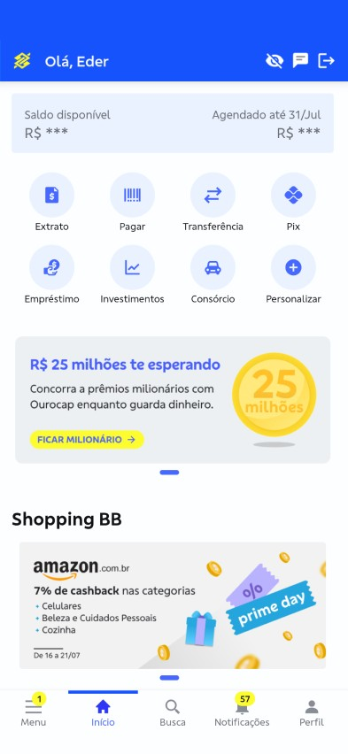
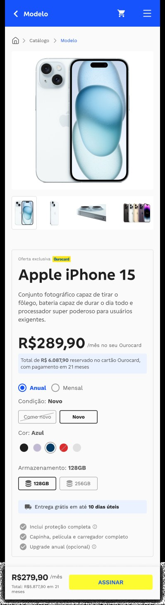
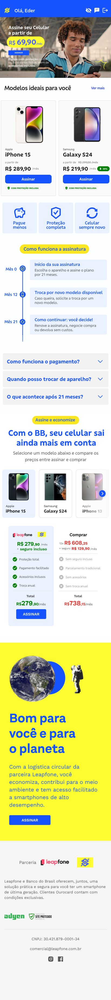

Project 01 · Banking app
Banco do Brasil × Leapfone
Structuring the smartphone subscription flow offered to Banco do Brasil's Ourocard customers, in partnership with Leapfone, from discovery to engineering handoff.
Section
Context
A financial benefit, delivered through a rental model.
Banco do Brasil, in partnership with the startup Leapfone, started offering its customers the option to rent smartphones by subscription, with special conditions and exclusive benefits. The challenge was structuring an efficient, intuitive digital flow to sign up for the service, accessible through app and website, while guaranteeing clarity, security and adoption.
Goal: design a fluid, trustworthy journey for subscribing to a smartphone, respecting BB's guidelines, the particularities of a BYOD model, and integrating Leapfone's offer into the bank's own digital experience.

Section
Discovery
Before drawing a single screen, understanding how trust is built.
Desk research and benchmarking
I analyzed the market landscape, device rental models and the experience offered by direct competitors (Itaú, Claro, Vivo, Amazon and Apple Trade-in), gathering learnings about tone of voice, decision steps and trust factors.
Mapping the existing journey
Working with the product team, I mapped entry points (app, website, physical branch), decision steps (device, plan, benefits) and the core doubts customers had: is this a rental or a purchase, is it safe, which plan fits me.
Personas and use cases
Based on team data and quick interviews with Ourocard customers, we defined three target personas and prioritized flows for each one:
Always wants the newest device, cares about upgrade paths.
Not used to renting, needs reassurance about ownership and safety.
Wants practicality and the best monthly cost, less attached to a specific brand.
Section
Structuring the solution
Choosing a device is easy. Choosing a subscription plan is not.
I structured flows for plan comparison, adding extra benefits, checkout and payment, and post-sale subscription management. All of it was built in FigJam and Figma, validating continuously with product and engineering.
The trickiest part was the device configuration step: condition, color and storage all change the monthly price in real time, and that price had to stay legible under a card offer that already involves its own numbers (Ourocard limit, installments, protection).

Section
Testing and validation
See the whole flow, end to end.
I ran design review sessions with the design and product team, refining microinteractions and error messages. Together with the team, we applied usability tests with real users, which led to improvements in three areas: clarity about the rental model versus a purchase, trust in the offer through plain-language terms, and a simplified payment step.
Below is the full mobile flow as one continuous prototype, scroll inside the frame to browse it end to end, the same way it was tested with users.

Section
Handoff
A spec is a promise you keep to engineering.
I delivered detailed functional documentation per screen: business rules, expected behavior at each step, integration stages with Leapfone, and the design system components used. Everything lived directly in Figma, with interactive specs for direct handoff to the engineering squads.
Results
What changed once it shipped.
- Lower average time to subscribe in the validated prototype
- Better comprehension of the offer after microcopy adjustments
- Prototype validated across 3 fast test cycles, well received
- Flow shipped inside the BB app, with plans to expand to other channels
Note: some business information was adapted or masked to preserve sensitive data and respect confidentiality agreements. The essence of the project, the design process and the proposed solutions were kept intact for presentation purposes.
Want to see another project?
There is also a corporate website redesign and a loyalty program case in the portfolio.
View all projects